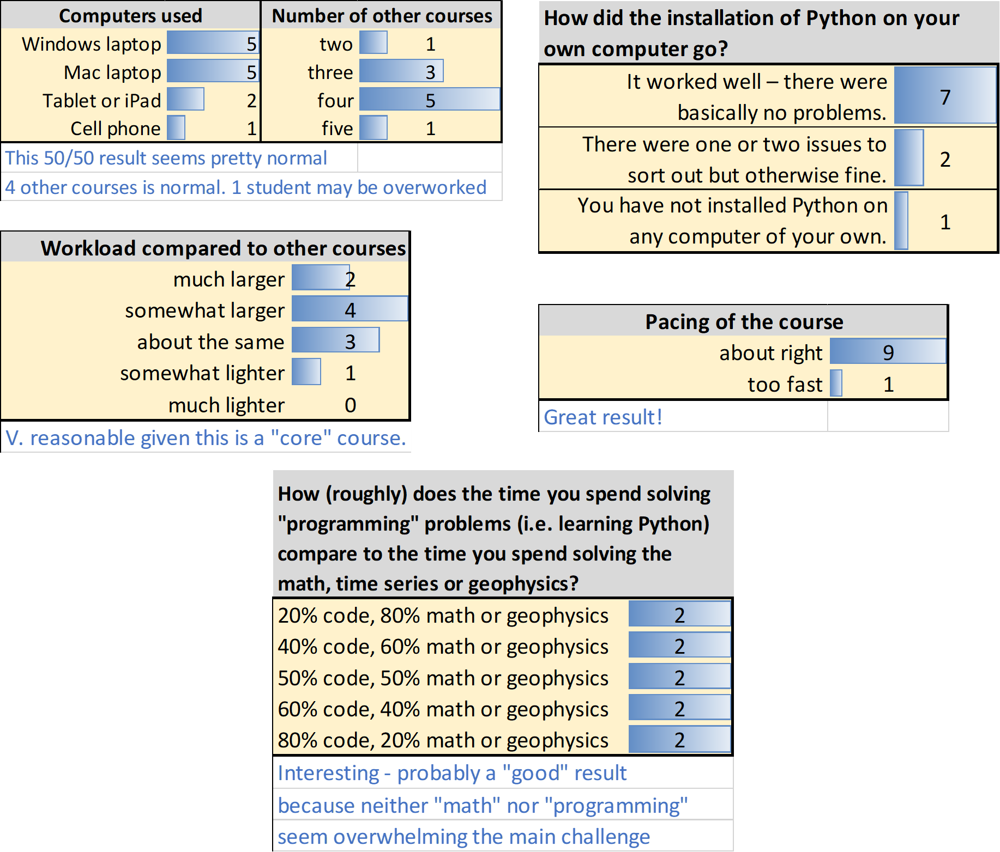
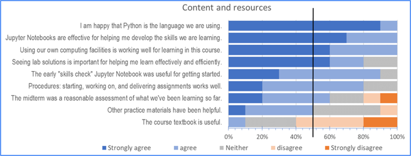
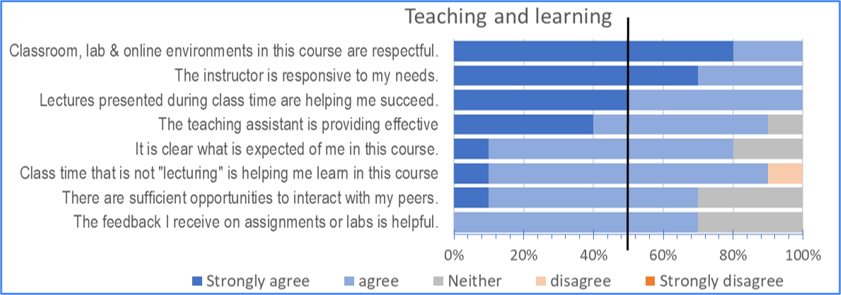

EOSC 354
Contents
EOSC 354#
Official course description#
Analysis of Time Series and Inverse Theory for Earth Scientists: Continuous and discrete Fourier transforms, correlation and convolution, spectral estimates, optimum least-squares filters, deconvolution and prediction, frequency-wave number filtering. A practical course on computer techniques applied to the analysis of a wide range of geophysical phenomena.
Links: >Home, >UBC Calendar, >ubcexplore, > EOAS curriculum map.
COURSE OUTLINE
Introduction and review of complex numbers
Discrete Fourier and z-transforms
Spectral estimation
Filtering, correlation and deconvolution
Linear parameter estimation
Underdetermined problems
OCESE project objectives#
Convert all 11 MatLab assignments to Python-based Jupyter Notebooks. Build two versions for each; one for students and one including solutions.
Design and pilot a “skills check assignment” to help students identify the extent to which they are ready to begin solving assignment problems.
Implement a students’ installation procedure so that all students can install Python and Jupyter Notebooks onto their own computers with as little difficulty as possible.
Actions taken#
Circumstances
This was the first core (not elective) upper level course that the OCESE project converted to Python. Two other courses in the Dep’t were already using Python (ATSC 301 and EOSC 213), and at least two were permitting students to use either MatLab or Python (this course (EOSC 354) and EOSC 410).
COVID: Fall 2021 was “in person” but with mandatory masks, and still “not normal”.
Enrollmenet: 10-15 students each year. Students learn to install the necessary software on their own computers. Therefore, logistics of deliverying Python-based Jupyter Notebooks is not burdened by the need for Jupyter hubs that (a) need special environments or (b) need to scale resources up and down according to demand of large numbers of studetns.
Assignments or “labs”: The first 8 were in place for start of course, while assignments 9-11 were completed in time for use in Oct-Nov.
Skills check exercise (Assignment 0): Nine specific skills are defined, tasks to check if the student can demonstrate these skills are posed, and pointers to documentation are provide for further details about each skill. See exercise here.
Installation guidelines were developed in parallel with those for EOSC 211, and based on experiences in ATSC 301.
Jupyter hubs are not needed for this course since one learning goal is for students to gain skills related to installing, managing and using Python on their own computers.
Dashboards: Use of dashboards for illustrating or exploring concepts was discussed, and one prototype for demonstrating Fourier Transform reconstruction of periodic signals was prepared. It was not used but is in the OCESE dashboard list. One reason for not pursuing this development was that the instructor produced short notebooks himeselve for demonstrating concepts in class. There are also many such resources in the public domain that can be found online.
Instructors’ experiences#
The instructor was a first-time teacher (PhD student) filling in while the normal instructor was on leave. He had been teaching assistant (TA) for the course in pervious terms and knew the content well.
Some key comments from a debriefing interview with this instructor 2 months after the course was completed:
The course proceeded smoothly with few surprises or difficulties. Content and pacing were kept as close to prior terms as possible.
The switch to Python was simple - no big issues.
Lab time, and marking load, were much as before.
Logistics worked well for this small course. Students fetch notebook files (*.ipynb) from the LMS (Canavas), work on their own laptops, and deliver completed work as a completed notebook file to the LMS. Teaching assistant fetches file, runs it and applies the marking rubric.
Any particular difficulties? Assignment 4 seems very long. Not challenging but labour intensive. Other than that, difficulties were quite variable for different students. But with small class and experienced TA, these are managed during weekly lab sesions (2hrs each).
Were resources adequate (text, labs, etc.)? Yes. Instructor did write a few short notebooks to illustrate specific concepts during lectures (eg. Fourier Transforms).
Students’ experiences#
A midterm feedback survey was used to gauge students’ experiences and perceptions in time to make adjustments. Results are summarized in figures below, with a few observations in blue text under each table. Number of students is small but results suggest there were few complaints or concerns.
{kind=link}
Five point Likert-sclae (agree/disagree) questions provide information about what seemed to work well, and what didn't. 
{kind=link}

{kind=link}
Evidently …
All students agreed that learning Python was beneficial and that Jupyter Notebooks worked well for deliverying and working on assignments.
The early “skills check” Jupyter Notebook was definitly approved of.
The text book seems to be NOT useful. This could be improved. The lecture material and assignment steps might need a new timeseries text book that uses a current programming context for discussing concepts and applications.
The midterm exam may be too “theoretical” given that students spend most of their time practice the application of coding to address problems.
The instructing and the learning experiences were all good.
Selected responses to open-ended feedback questions:
These were clearly a thoughtful and insightful set of students. Adjustments suggested seem mostly about supporting development the “maturity” associated with translating a problem into code. The theory is one thing, the coding skills are another, and bringing the two together is particularly challenging when both are being developed simultaneously. But the course was generally appreciated.
What has been most helpful for your learning in this course so far?
I really like how fast the instructor responds to his emails. He always answers my questions in detail and it helps a lot.
The 5 minute review before every class is very helpful.
Reiterating the most important points/concepts in class.
Assignments and practice problems, dicussion with peers after class.
What has been most challenging for you in this course so far?
“A LOT of maths derivations and applications, which can be very confusing at times.”
“Actually applying what we’ve learnt in class to solving problems.”
What is one thing you are doing that is helping you succeed in this course?
Regularly attending class + asking for help + completing all assignments.
Reading over past lab solutions.
How can we better support you to enhance your learning experience or success in this course?
I think more in-class examples would help + exams that are a bit more similar to the assignments.
I feel like if we had more of a direct line of communication (e.g. discord or slack), it would make learning/asking questions so much easier (especially with such a small cohort).
Explain more of what our code should look like at the start of labs so we have a better idea of how to approach the problems.
Finally, have you any further comments about the course and/or the questions in this survey?
The assignments are way too long and I know that other students feel the same way. They can take up to 13 hours to complete. It would be nice if some of the questions could be taken out and turned into optional practice.
I guess I don’t find the coding useful for learning material.
Midterm was really challenging. Felt it was much more conceptual that I expected, and the conceptual problems were difficult to solve, ie could have used some more practice. Also, there were no problems similar to the assignments.
One insightful comment from the instructor (who had taken the course 5 years previously) is: “The comment about the assignments sometimes being long/arduous I think is shared among all these students. [But] I would have given similar feedback when I was taking the course in 2017.”
Feedback was also obtained from one student who found the course particularly inpsiring about workloads, challenges, and experiences considered to be paritcularly rewarding or inspiring. These are useful for sharing with prospective students (eg as part of the QuEST project), but are out-of-scope for the OCESE project.
Costs#
Resources used to accomplish this course transformation (from MatLab to Python, using Jupyter notebooks) included:
One half-time undergraduate student with exceptional programming skills who had also taken the course only 7 mths prior to carrying out the conversion. Programming & testing new Python versions of each of the 11 labs took averaged roughly 8 hrs each. Generating, testing and iterating the “skills-check” Jupyter Notebook took roughly 40 hrs.
Project coordinator who also had some experience with course content (perhaps ~10% f.t.e. on this component of the OCESE project) to supervise that student and liaise with project management and the faculty members involved in teaching the course.
The first deployment of this well-established course in it’s new form required some attention to detail in the month prior to day1, including “test driving” the logistics of delivery, completing, submitting, grading and returning assignments with feedback.
Running this low-enrollment course in it’s new form takes no more effort than before. As expected, it benefits from the fact that students are in their 3rd of 4th year and therefore “committed” to the discipline.
Lessons Learned#
The student hired to carry out conversions had taken the course the year previously and was particularly keen on signals, programming and geophysics. This was a significant bonus (not planned) because the student had experienced all the challenges that were specific to completing the assignments in Python.
To focus on pros, cons, challenges and opportunities regarding use of Python for this course the student hired to carry out the conversions was asked to reflect on experiences by respond to the following questions:
Which portions of the course were most inspiring, interesting, satisfying or fun?
Were any assignments particularly long or difficult to complete in a reasonable time?
For each of months 1, 2, 3, how did the course feel in terms of balance of theoretical versus applied, relevance, and inspiration?
We anticipate that the course will be able to tackle more advanced material when students taking the course have gained more programmig experience. This is anticipated to occure within the next year or two as all relevant first and second year courses begin to be taught using Python.